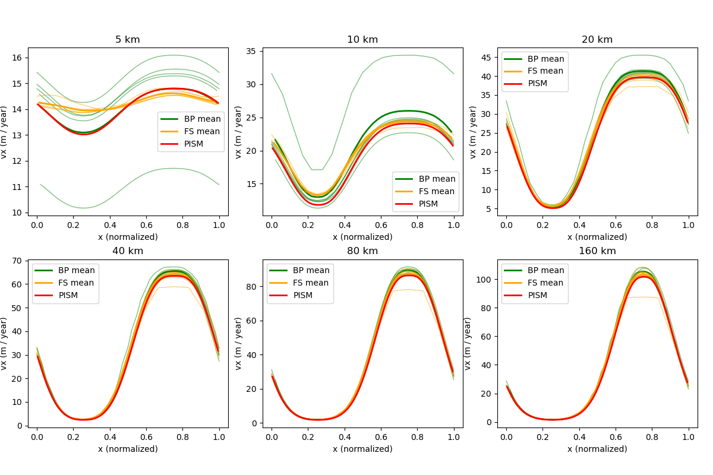
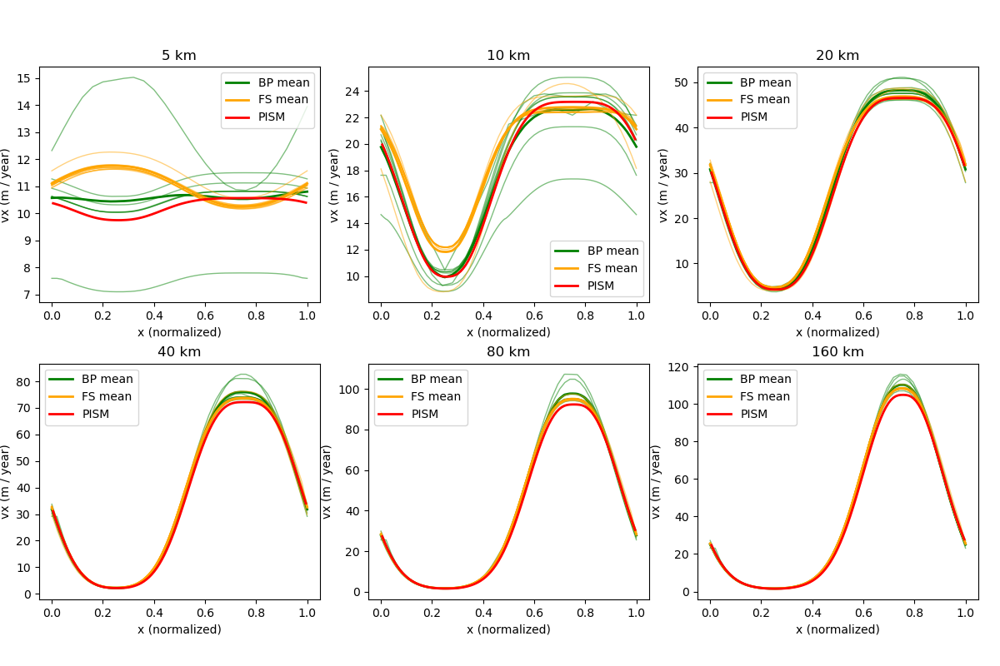
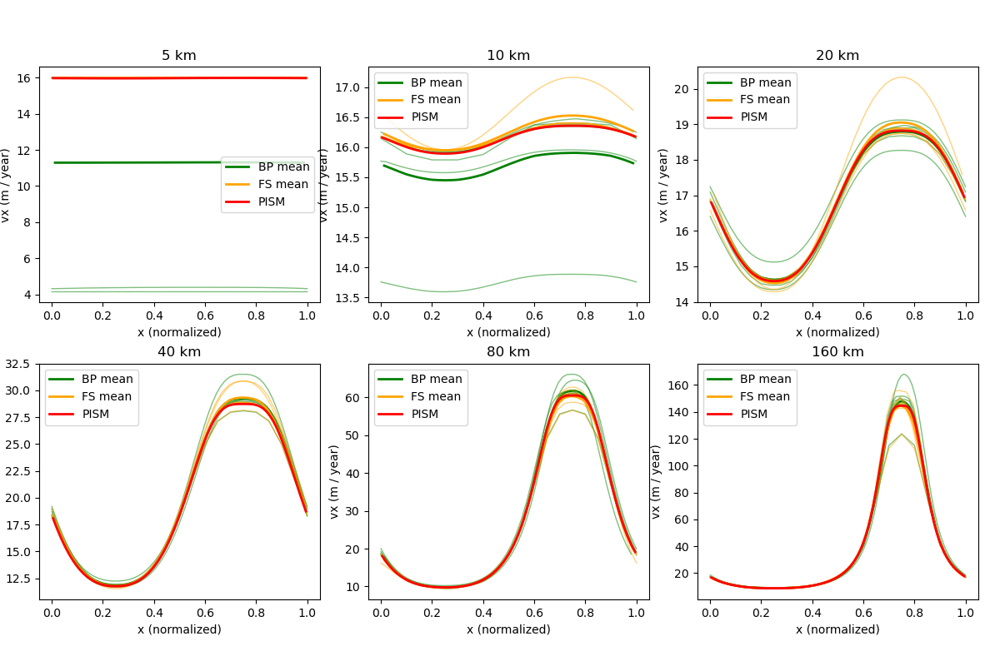
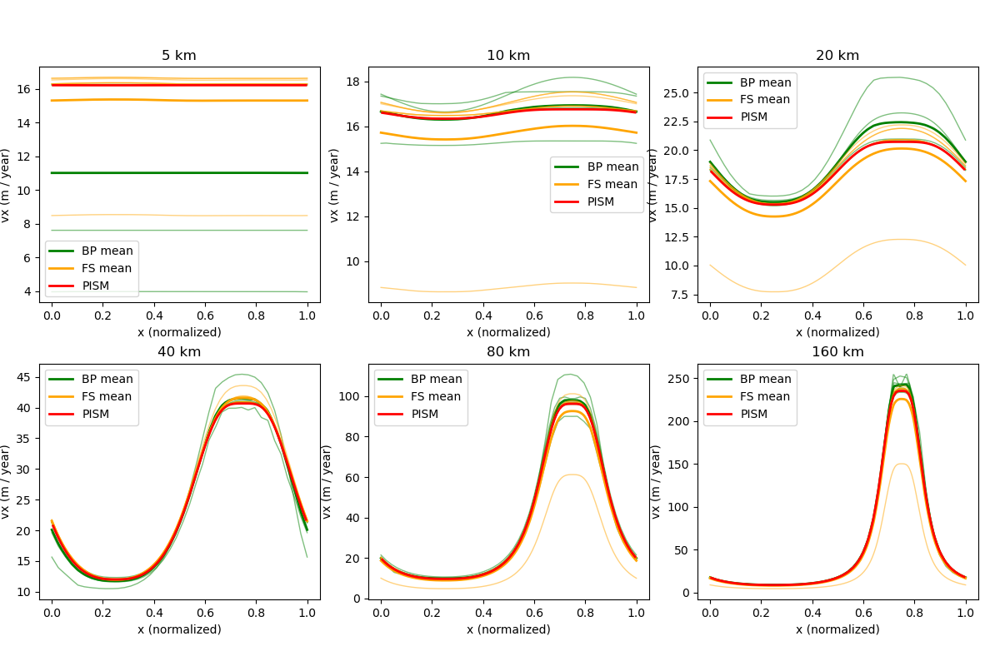
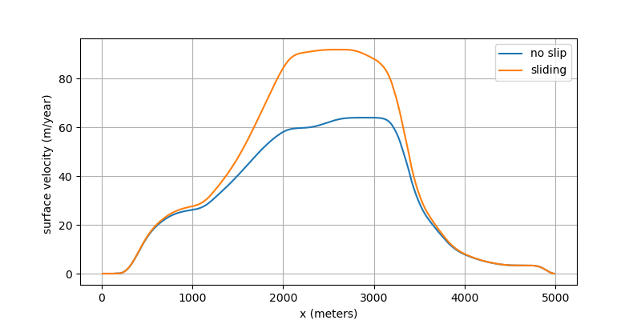
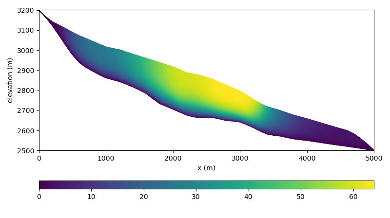
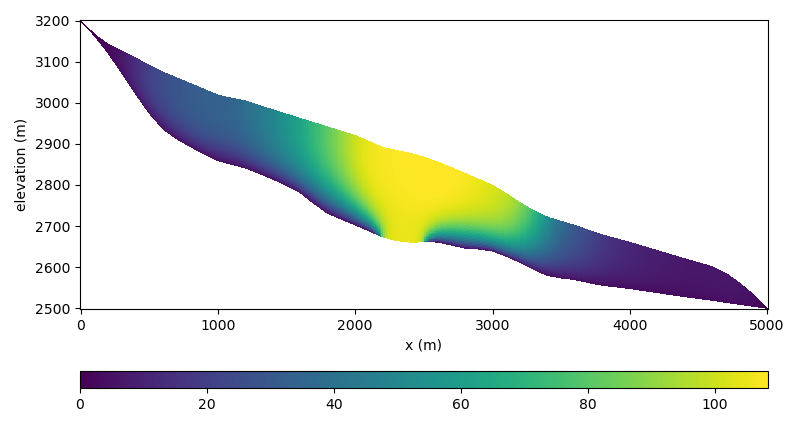

ISMIP-HOM¶
The ISMIP-HOM intercomparison project ([129], [122]) consists of 8 experiments:
A: ice flow over a rippled bed,
B: flow over a rippled bed along a flowline (similar to A, but the basal topography does not depend on \(y\)),
C: ice stream flow over a flat sloping bed with a spatially-variable basal friction coefficient \(\beta\),
D: ice stream flow along a flowline (similar to C, but \(\beta\) does not depend on \(y\))
E1: simulation of the flow along the central flowline of Haut Glacier d’Arolla with a no-slip boundary condition,
E2: same as E1 but with a 300m zone of zero traction.
F1: prognostic experiment modeling the relaxation of the free surface towards a steady state with zero surface mass balance,
F2: same as F1 but with a different slip ratio.
All experiments use the isothermal Glen flow law and all sliding flow uses the linear sliding law.
We implement ISMIP-HOM experiments A, B, C, D, E1, E2 and report computed ice velocities.
Experiments A, B, C, D¶
Experiments A through D require additional code to implement periodic input geometry; see
examples/ismip-hom/abcd and PISM’s source code for details.
Figures Fig. 28, Fig. 29, Fig. 30, and Fig. 31 compare PISM’s results to some “LMLa” (Blatter-Pattyn) and “FS” (Stokes) models from [122] using data provided in the supplement.
Note
We exclude 1 model (mbr1) from Fig. 30 and three models
(rhi1, rhi2, rhi3) from Fig. 31. Either corresponding
data in the supplement are wrong or these results were excluded from figures 8 and 9 in
[122] as well.
In all of the figures below results from individual models are plotted using faint green (Blatter-Pattyn) and orange (Stokes) lines.
In Fig. 30 for the length scale \(L\) of 5km PISM’s results coincide with the whole set of curves corresponding to Stokes models: an outlier among Blatter-Pattyn models distorts the vertical scale of the plot.
PISM results below use \(101\times 101\times 5\) grid points for experiments A and C and \(101\times 5\) for B and D. All 24 diagnostic computations complete in under 2 minutes on a 2020 laptop.

Fig. 28 Surface velocity at \(y = 0.25 L\) for the Experiment A¶

Fig. 29 Surface velocity for the Experiment B¶

Fig. 30 Surface velocity at \(y = 0.25 L\) for the Experiment C¶

Fig. 31 Surface velocity for the Experiment D¶
Experiment E¶
Unlike simplified-geometry experiments A–D, the diagnostic simulation of the flow along
the central flowline of Haut Glacier d’Arolla does not require any code modifications and
uses the pism executable. Please see examples/ismip-hom/e-arolla for details.
The complete script used to produce data for Fig. 32, Fig. 33, and Fig. 34 is below:
# The ISMIP-HOM paper uses 1e-16
A=$(echo "scale=50; 10^(-16) / (365 * 86400.0)" | bc -l)
input=$1
output=$2
# number of grid points in the X direction
Mx=$3
# number of MG levels
M=$4
# coarsening factor
C=4
# number of vertical levels in the stress balance solver
bp_Mz=$(echo "$C^($M - 1) + 1" | bc)
echo "Using ${bp_Mz} vertical levels..."
mpiexec -n 8 pism -i ${input} -bootstrap \
-Mx ${Mx} \
-Mz 216 \
-Lz 215 \
-z_spacing equal \
-grid.registration corner \
-grid.periodicity y \
-stress_balance.model blatter \
-stress_balance.blatter.flow_law isothermal_glen \
-flow_law.isothermal_Glen.ice_softness ${A} \
-stress_balance.blatter.coarsening_factor ${C} \
-blatter_Mz ${bp_Mz} \
-bp_snes_monitor_ratio \
-bp_ksp_type gmres \
-bp_pc_type mg \
-bp_pc_mg_levels ${M} \
-bp_mg_levels_ksp_type richardson \
-bp_mg_levels_pc_type sor \
-bp_mg_coarse_ksp_type cg \
-bp_mg_coarse_pc_type gamg \
-basal_resistance.pseudo_plastic.enabled \
-basal_resistance.pseudo_plastic.q 1.0 \
-basal_resistance.pseudo_plastic.u_threshold 1m.s-1 \
-basal_yield_stress.model constant \
-energy none \
-geometry.update.enabled false \
-atmosphere uniform \
-atmosphere.uniform.precipitation 0 \
-surface simple \
-y 1e-16 \
-o_size big \
-o ${output}
This run uses the \(12\) m grid resolution along the flowline and \(65\) vertical levels in the stress balance solver, which corresponds to the vertical resolution of under \(4\) meters where the ice is thickest.
We use 4 multigrid levels with a rather aggressive coarsening factor (\(4\)).

Fig. 32 Surface ice velocity for the Experiment E¶

Fig. 33 Ice velocity for the Experiment E1 (no slip)¶

Fig. 34 Ice velocity for the Experiment E2 (zone of zero traction)¶
| Previous | Up | Next |